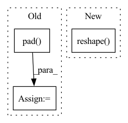

Pattern ID :34249
Before Change
return conv5_maxpool
conv5_dropout = F.dropout(input = conv5_maxpool, p = 0.25, training = self.training, inplace = True)
conv6_pad = F.pad( conv5_dropout, (0, 0, 31, 32))
conv6 = self.conv6(conv6_pad)
conv6_activation = F.relu(conv6)
conv6_BN = self.conv6_BN(conv6_activation)
conv6_maxpool, conv6_maxpool_idx = F.max_pool2d(conv6_BN, kernel_size=(2, 1), stride=(2, 1), padding=0, ceil_mode=False, return_indices=True)
conv6_dropout = F.dropout(input = conv6_maxpool, p = 0.25, training = self.training, inplace = True)
flatten = conv6_dropout.reshape(-1, 256)
classifier = self.classifier(flatten)After Change
x = self.layer(x, self.conv6, self.conv6_BN)
// Compute logits
return self.classifier(x.reshape( -1, 256) )
//////////////////////////////////////////////////////////////////////////////////////////////////////////////////////////////////////////////////////
// Forward pass utilitiesIn pattern: SUPERPATTERN
Frequency: 3
Non-data size: 3
Instances Fragment ID: 98201790
Project Name: maxrmorrison/torchcrepe
Commit Name: 417aab7a92fdcc710e847c5012e352bea9d5989b
Time: 2020-06-04
Author: maxrmorrison@gmail.com
File Name: torchcrepe/model.py
M Class Name: Crepe
N Class Name: Crepe
M Method Name: forward(3)
N Method Name: forward(3)
M Parent Class: nn.Module
N Parent Class: nn.Module
M File Name: torchcrepe/model.py
N File Name: torchcrepe/model.py
M Start Line: 76
M End Line: 90
N Start Line: 68
N End Line: 80
Before Change
polygons = []
// pad mask with 0 around borders
padded_mask = np.pad( mask, pad_width=1, mode="constant", constant_values=0)
contours = measure.find_contours(padded_mask, 0.5)
// Fix coordinates after padding
contours = np.subtract(contours, 1)
for contour in contours:
if not np.array_equal(contour[0], contour[-1]):After Change
if len(contour) <= 2:
continue
contour = contour.reshape( (-1, 2))
if not np.array_equal(contour[0], contour[-1]):
contour = np.vstack((contour, contour[0])) // make polygon closed
contour = contour.flatten().clip(0) // [x0, y0, ...] Fragment ID: 98201795
Project Name: openvinotoolkit/datumaro
Commit Name: ce0a122f845c1e9c673d918e8884208a0607e8b8
Time: 2021-02-03
Author: maxim.zhiltsov@intel.com
File Name: datumaro/util/mask_tools.py
M Class Name: AnonimousClass
N Class Name: AnonimousClass
M Method Name: mask_to_polygons(2)
N Method Name: mask_to_polygons(3)
M Parent Class:
N Parent Class:
M File Name: datumaro/util/mask_tools.py
N File Name: datumaro/util/mask_tools.py
M Start Line: 148
M End Line: 180
N Start Line: 166
N End Line: 177
Before Change
self._fc = Tensor.zeros(1280, 1000)
def forward(x):
x = self._bn0(x.pad( 0,1,0,1) .conv2d(self._conv_stem, stride=2))
for b in self._blocks:
x = b(x)
x = self._bn1(x.conv2d(self._conv_head))
x = x.avg_pool2d() // wrong?
x = x.dropout(0.2)
return x.dot(self_fc).swish()
if __name__ == "__main__":After Change
for b in self._blocks:
x = b(x)
x = self._bn1(x.conv2d(self._conv_head))
x = x.avg_pool2d(kernel_size=x.shape[2:4]).reshape(shape=(-1, 1280))
//x = x.dropout(0.2)
return swish(x.dot(self._fc))
if __name__ == "__main__": Fragment ID: 98201797
Project Name: geohot/tinygrad
Commit Name: e84ad3e27d649cdb3e36513552e31d9c60be32f1
Time: 2020-10-27
Author: geohot@gmail.com
File Name: examples/efficientnet.py
M Class Name: EfficientNet
N Class Name: EfficientNet
M Method Name: forward(2)
N Method Name: forward(1)
M Parent Class:
N Parent Class:
M File Name: examples/efficientnet.py
N File Name: examples/efficientnet.py
M Start Line: 77
M End Line: 83
N Start Line: 88
N End Line: 96